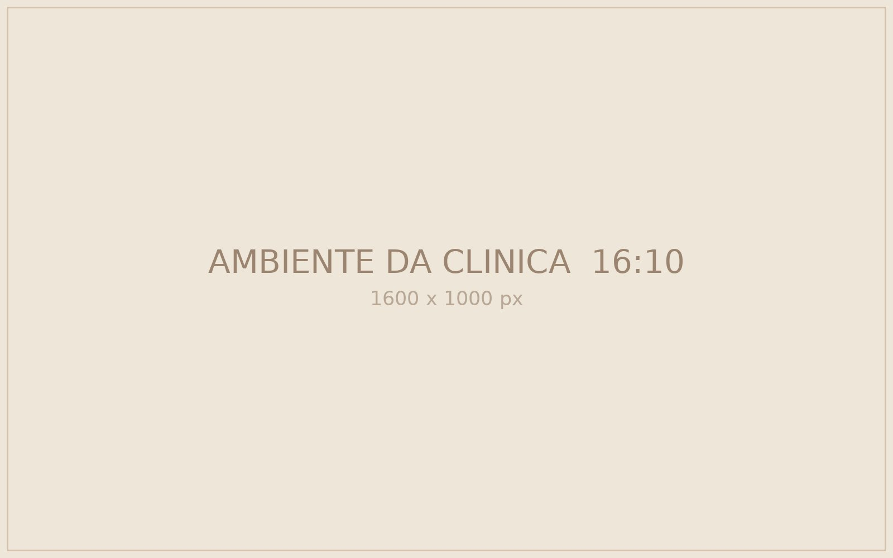
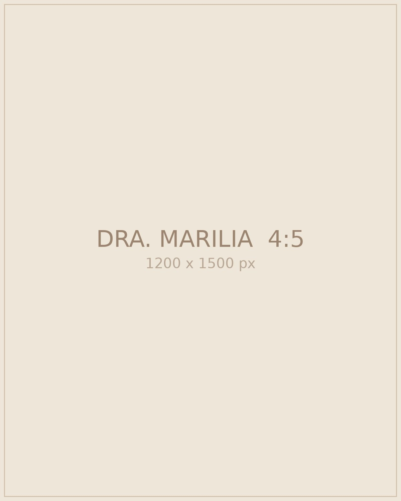
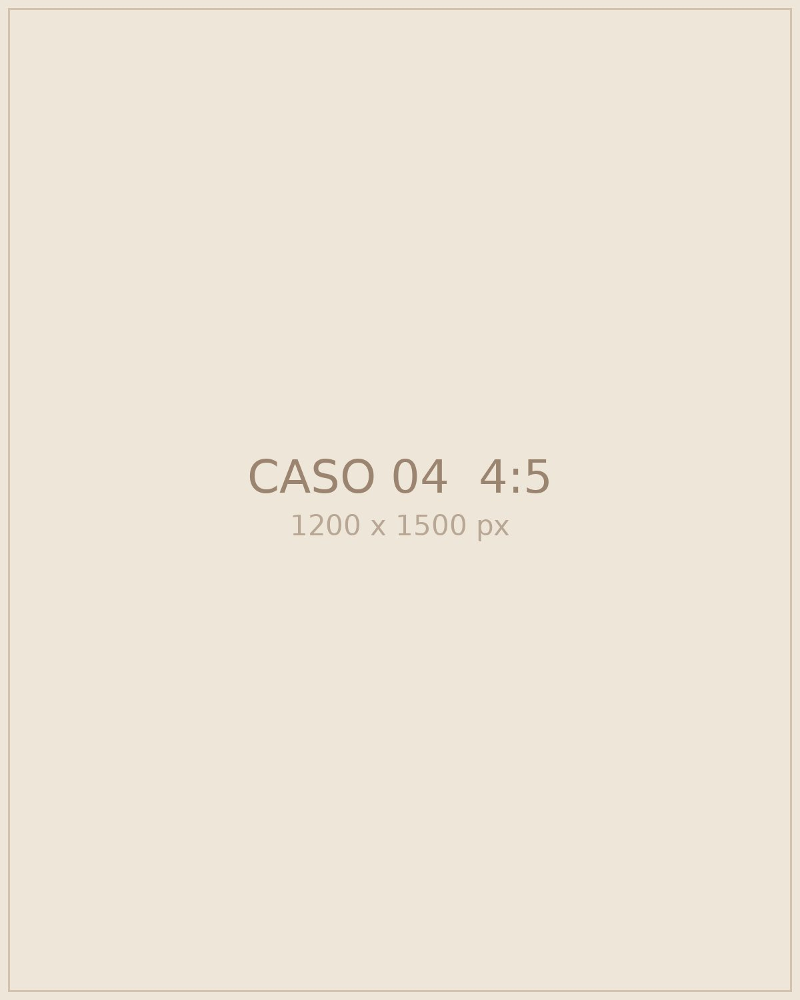
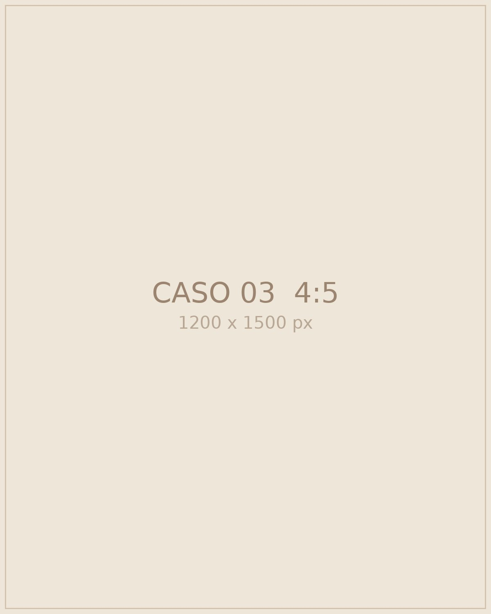
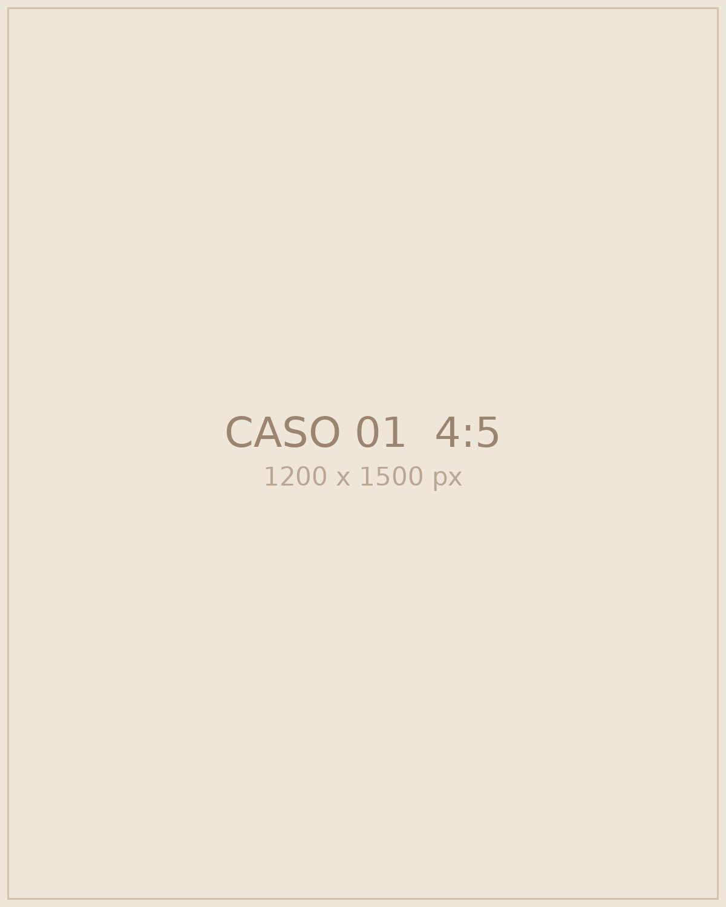
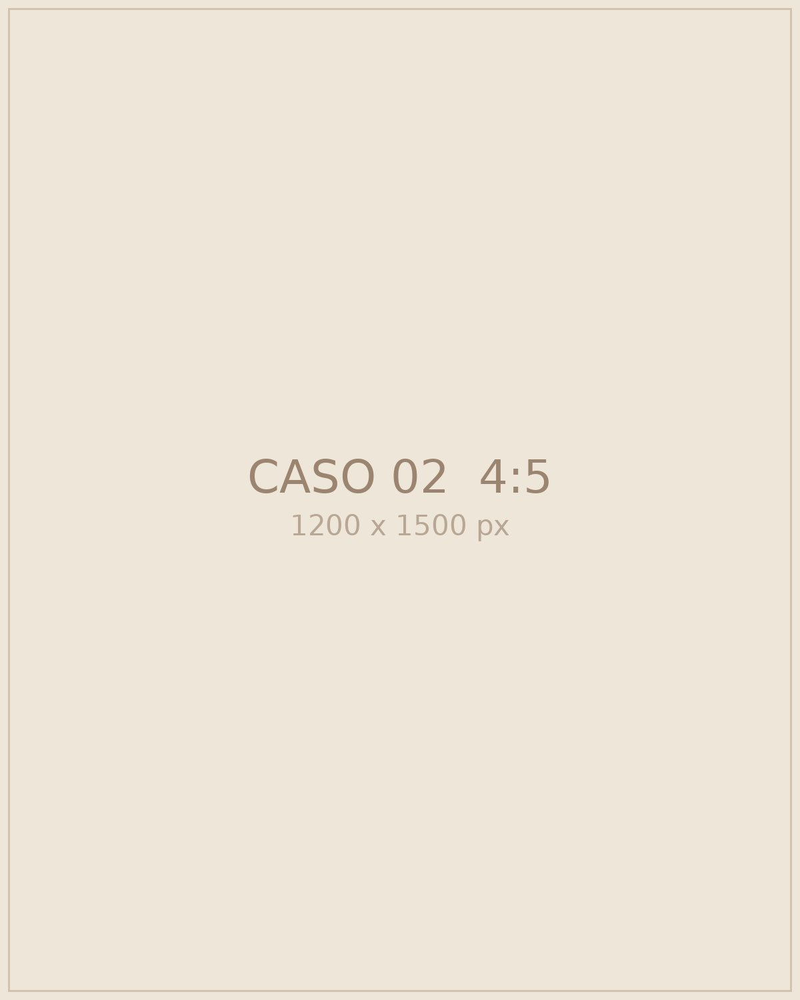
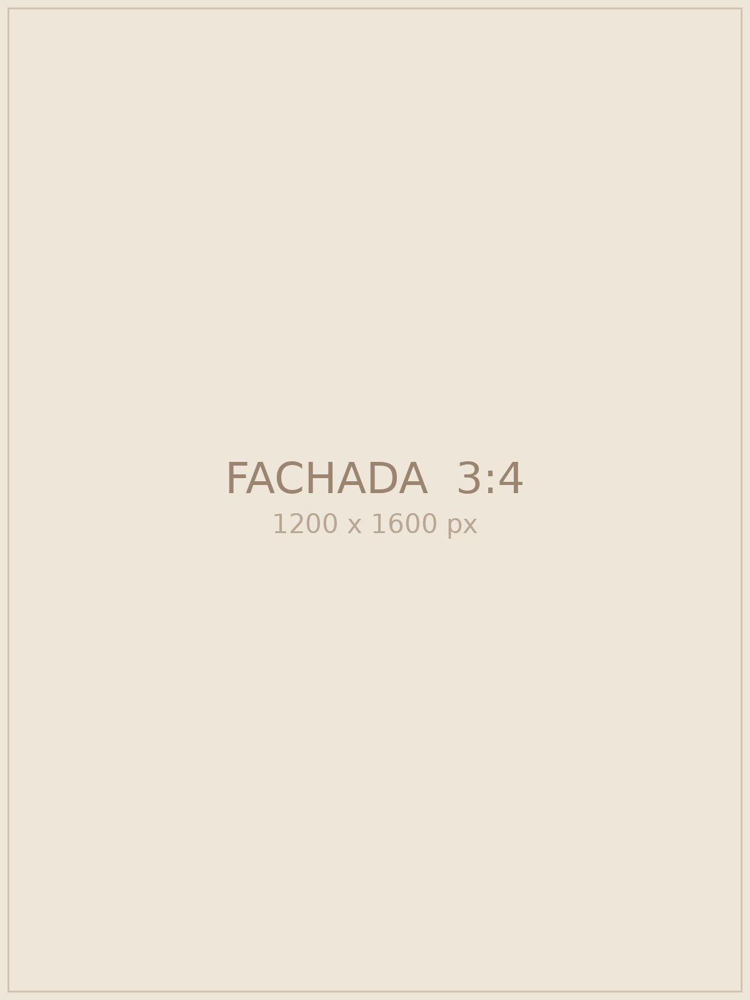

01Biomimética
Estética do Sorriso
Lentes de contato em porcelana ultrafina, facetas em resina estratificada e clareamento guiado com preservação do esmalte.
Estética, saúde e naturalidade em cada planejamento. Odontologia integrada de alto padrão.
Agendar avaliaçãoCada paciente traz uma trajetória singular. Nosso trabalho une biomimética e escuta ativa para construir resultados que honram a identidade do seu rosto.


Com mais de uma década de prática clínica, a Dra. Marília alia diagnóstico digital minucioso à sensibilidade artesanal, priorizando longevidade biológica e leveza visual.
Conhecer trajetória“Um sorriso faz parte do rosto, da expressão e da personalidade. O design ideal é aquele que parece ter nascido com você.”
— Conceito integrativo clínico
Lentes de contato em porcelana ultrafina, facetas em resina estratificada e clareamento guiado com preservação do esmalte.
Restauração integral mastigatória e articular através de implantes dentários com cirurgia guiada sem cortes.
Protocolos de prevenção avançada, cuidados periodontais profundos e atendimento acolhedor para crianças e famílias.
Precisão milimétrica e respeito à anatomia facial em cada detalhe concluído.




Imagens reais de pacientes da clínica, sem edição dos resultados. Cada caso é único e o desfecho varia conforme a condição de cada paciente.
Diagnóstico completo do estado de saúde e entendimento das suas vontades estéticas.
Escaneamento 3D e previsibilidade do resultado antes de iniciar o procedimento.
Tecnologia minimamente invasiva, com conforto durante o procedimento e acompanhamento ao longo do tempo.

Projetada para conferir privacidade, silêncio e acolhimento, com consultórios integrados e equipamentos modernos.
Ver rota no Google MapsAgende seu horário com a Dra. Marília Macedo e esclareça suas dúvidas sobre estética e saúde oral.
Agendar pelo WhatsApp